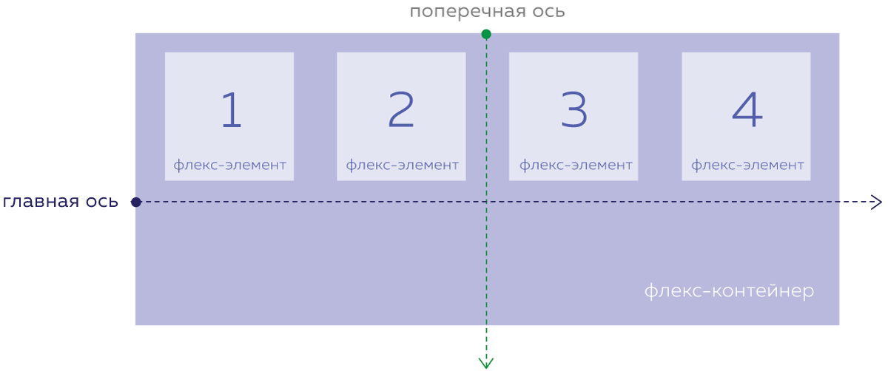

Поперечная ось flexbox
3 Ноября, 2024
Лекция из HTML Academy про поперечную ось flexbox в CSS
Во флексбоксе вместо направлений «верх» и «низ» используется понятие «поперечная ось».
Вдоль этой оси происходит «вертикальное» выравнивание элементов.
Пример на картинке
Поперечная ось всегда перпендикулярна главной оси и поворачивается вместе с ней если:
- Главная ось направлена горизонтально, то поперечная ось смотрит вниз.
- Главная ось направлена вертикально, то поперечная ось смотрит направо
Это поведение может показаться не совсем интуитивным, и к нему нужно привыкнуть.
В результате поперечная ось никогда не направлена вверх или влево.
Выравнивание по пореченой оси flexbox
Css-свойство "align-items" определяет, как элементы будут выровнены вдоль поперечной оси.
Доступные значения для "align-items" включают:
-
"stretch" - Значение по умолчанию, которое заставляет элементы растягиваться на всю "высоту" флекс-контейнера.
align-items: stretch;- "flex-start" — элементы выравниваются по верхнему краю контейнера (при расположении в строку) или по левому краю (при расположении в столбик).
align-items: flex-start;- "flex-end" — выравнивает элементы по нижнему краю контейнера вдоль поперечной оси.
align-items: flex-end;- "center" — элементы выравниваются по центру
align-items: center;- "baseline" — элементы выравниваются по базовой линии текста внутри них. Эта линия проходит по нижней части букв.
align-items: baseline;Свойство "align-self"
Свойство align-self позволяет индивидуально выравнивать элементы по поперечной оси.
В отличие от распределения по главной оси, которое задаётся для всего флекс-контейнера и действует одинаково на все элементы.
"align-self" позволяет задать разные значения выравнивания для отдельных элементов.
Это свойство применяется к самим флекс-элементам, а не к контейнеру, и имеет те же значения, что и align-items.